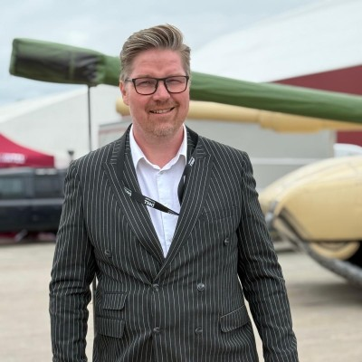

Baris AB grundades av Alanie Leifsson 2018 — ett bolag byggt på kombinationen av breda logistikkunskaper, operativ erfarenhet på lager och golv, och förmågan att leverera konkreta resultat för nordiska SME-företag. Utan enterprise-prislapp.
Alanie, känd som Lanny, grundade Baris AB 2018 — med övertygelsen att nordiska SME-företag förtjänar supply chain-kompetens som faktiskt stämmer med verkligheten i deras verksamhet. Med en Master of Science från Handelshögskolan vid Göteborgs universitet och bakgrund i allt från lageroptimering till intermodal transport och CO2-smarta logistiklösningar, är hon bolagets riktning och affärsmässiga ankare.
Som talare och tidigare Business Partner hos R2L - Roadraillink och VEGA International har hon representerat hållbara transportlösningar på nordiska och baltiska marknader — vid industrimässor, hamnar och terminaler. Hon tar lika gärna plats på en scen som i ett kundmöte.
Lanny talar sju språk och förstår värdet av kommunikation som skapar förtroende. Det är en förmåga som syns i varje kundrelation Baris AB bygger.

Jag har arbetat med supply chain och logistik sedan 2004 — i roller som spänner från interim supply chain manager på svenska tillverkningsbolag till analytisk konsult som bygger dashboards för globala team. Gemensamt för alla uppdrag: konkreta resultat i kronor.
Min bakgrund täcker hela supply chain-kedjan: lageroperationer, transportupphandling, 3PL-implementering, SAP warehouse-moduler och inventeringsanalys med Power BI och Python. Det gör att jag kan kliva in i en verksamhet och förstå problemen på djupet — inte bara på strategisk nivå.
Baris AB riktar sig till nordiska SME-tillverkare och distributörer som behöver supply chain-kompetens på enterprise-nivå — utan att budgeten kräver det.
Från global reservdelsstyrning till automatiserade godkännandeflöden — varje uppdrag har tillfört något nytt till verktygslådan.
ABC-klassificering av 1 847 artiklar. Identifiering av döda och tröga positioner med SEK-värden. Byggt Streamlit-verktyg för artikelgodkännandeprocessen.
Ansvarade för lager och transport. Upphandling och implementering av 3PL-partner inklusive IT-integration mot KP:s ERP-system. Strukturerade upp transportflödet och reducerade antal speditörer.
Del av SAP-implementeringsteamet för Scanias logistikcenter. Processkartlade hela godsmottagning, intern hantering och utleverans. Matchade befintliga flöden mot SAP fit-to-standard.
Ledde strategisk sourcing av transport och logistikkategorier. Ansvarade för RFQ/RFI/RFP-processer, leverantörsbedömningar och förhandlingar. Kontrakterade ny 3PL-setup.
Byggde global lager-dashboard i Power BI för samtliga Thermo Fishers globala sites. Dashboard visar aktuellt lagervärde, stock on hand och stock in transit per region, med KPI:er för globalt team.
Skapade global reservdelslogistik från grunden för Quintus Technologies. Processkartlade nuläget och designade framtida flöde. Byggde inventariedashboard i Power BI med BOM-koppling och masterdata-rensning.
Identifiering av döda/tröga artiklar, säkerhetslager, beställningspunkter.
RFQ/RFP-processer, speditörsförhandlingar, 3PL-val och implementering.
Power BI-dashboards, Python/Streamlit-applikationer, Excel-modeller.
Operativt ledarskap av lager och transport i akuta eller förändringsfaser.
SAP, Visma, Monitor — processkartor och fit-to-standard för warehouse-moduler.
30 minuter. Berätta om din situation — vi berättar vad vi ser och om vi kan hjälpa. Inga förpliktelser.
Ingen förpliktelse. Ingen försäljning utan samtycke.